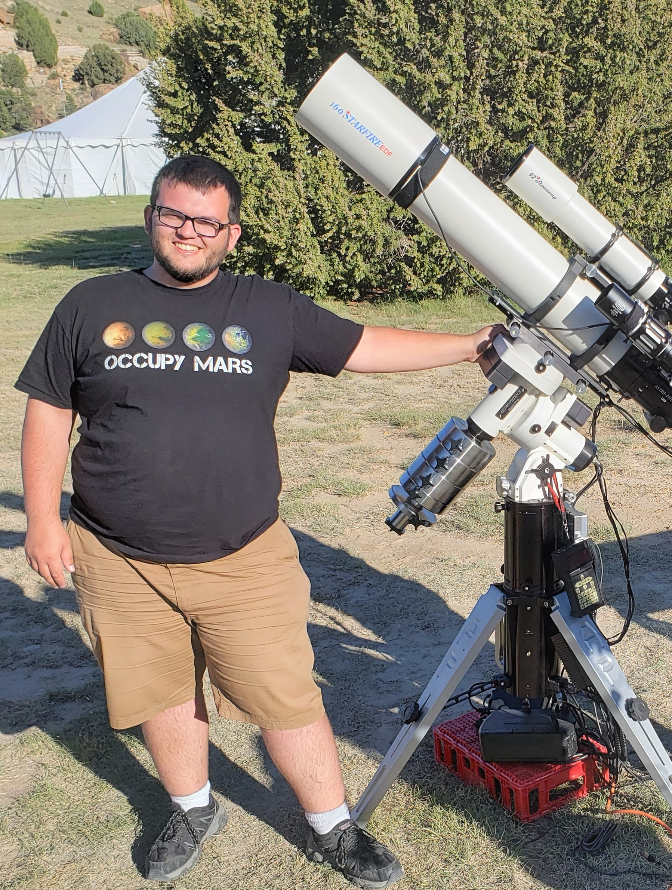
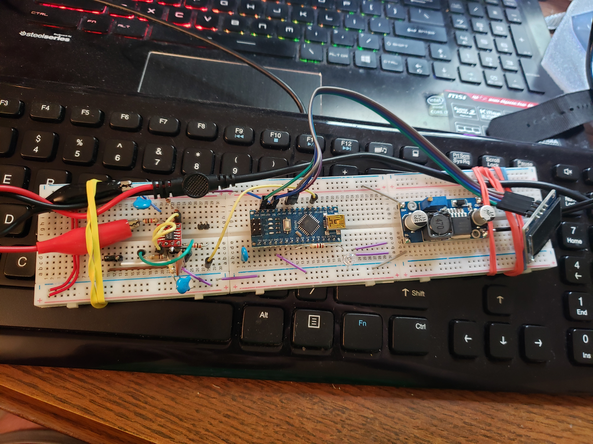
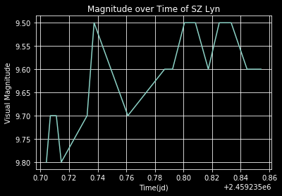

About Me

Education: Bachelors of Science in Physics, Minor in Astrophysics from Texas A&M University.
Research Interests: Variable Stars, Particle Astronomy, Material Science and Astronomical Software
Publications: VizieR Online Data Catalog: Identification of RR Lyrae stars from the DES (Stringer+, 2019), Identification of RR Lyrae Stars in Multiband, Sparsely Sampled Data from the Dark Energy Survey Using Template Fitting and Random Forest Classification
Presentations: Amateur Particle Astronomy, Rockford Amateur Astronomers, Feb 2021
Applied Photonics in Amateur Astronomy, Rockford Amateur Astronomers, Sept 2021
Research
DIY Muon Detectors
Scintillator and Geiger-Muller based muon detectors for use in amateur particle telescopes. With these, I hope to create the world's first amateur particle telescope network. I gave a talk on the subject for the Rockford Amateur Astronomers in 2021, and have gathered data with my latest detector based on the MIT Cosmic Watch detector design. Future developments planned are incorporating IoT into the detector so that many units can be operated on a large scale. The network will hunt for global cosmic ray anomalies, similar to the CRAYFIS and CREDO detector networks.

Variable Star Observations
Recording the magnitudes of variable stars visually and with CMOS cameras, with data recorded to the AAVSO under observer code PLLA. Observations can be viewed on AAVSO's website.

Contact
Email: lplybon1@gmail.com
Address: 1003 Terra Pl, Longview TX 75604
Astro Gallery

Moon Shot with a Samsung Galaxy S9 through an f/6 Orion StarBlast.

Star Field Taken on a RASA 8 for calibration.

M15 30 minute stack.

Helix Nebula

Comet 2018 W2 Africanus: Taken at OkieTex 2019 using the prototype Mach 2 mount. 50 image stack.

Lunar Eclipse 1-20-19

Gault 6478, 2-12-19: After a collision some time in November, Gault 6478 grew a tail. Measured here to 572,000 kilometers, this system is important to watch over time.
Forecasts and Updates
Sky forcast for Longview, Texas

For more information on the Clear Sky Chart, visit the website!
Projects